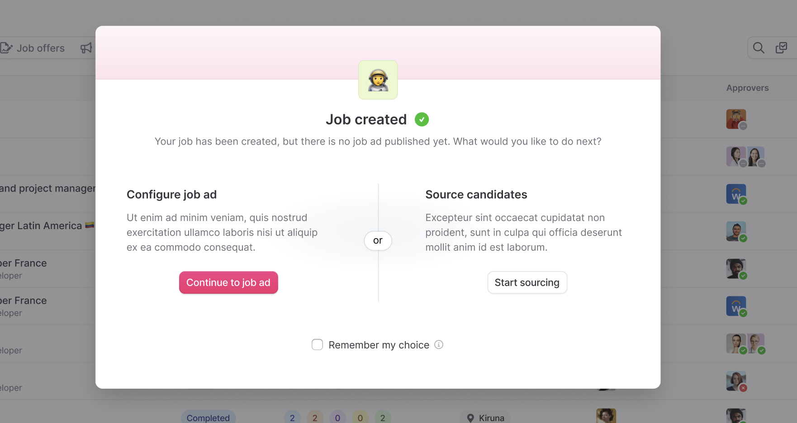
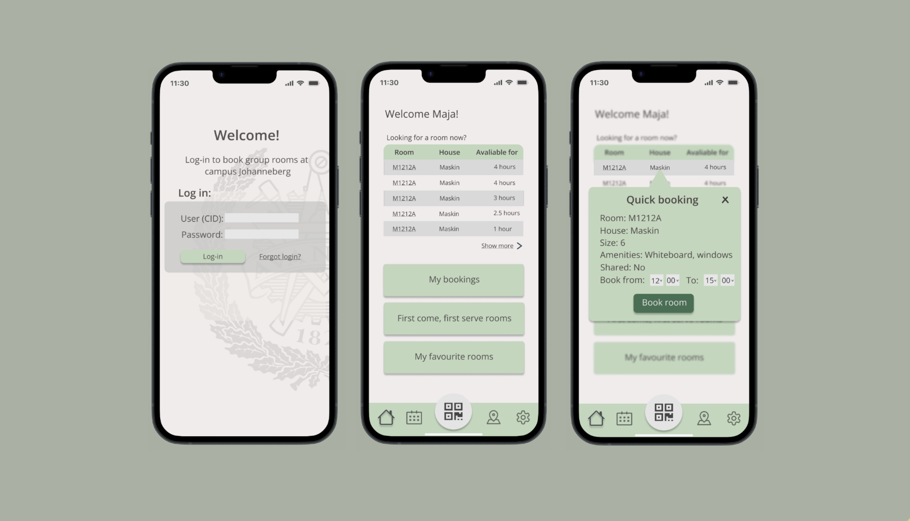

UX Designer & Researcher · Gothenburg, Sweden
Designing with
empathy and curiosity.
I do detailed user research and translate what I find into design that actually works. Currently completing a Master's in Software Engineering with a specialisation in Interaction Design and technologies at Chalmers.
View my workTwo projects with a research first approach.

AI-Augmented UX Research for Teamtailor
Multi-method research for a live product redesign and an investigation into how AI can scale UX insight without replacing the human in the loop.

Campus Study Room Booking App
Redesigned Chalmers' broken booking system, going from 55% room utilisation and ghost-bookings to a QR check-in app that cut booking time by 35%.
UX Research for Teamtailor's
Job Posting Redesign
A mixed-methods research project conducted in collaboration with Teamtailor, a global B2B SaaS recruitment platform used by 12,000+ organisations. The research informed an active product redesign and explored how AI can augment the UX research process at scale.
Redesigning the most vital function in Teamtailors ATS while evaluating AI-augmented methods.
Running quality UX research takes time. Recruiting participants, conducting interviews, analysing transcripts. For a fast-moving B2B SaaS company like Teamtailor, keeping up with continuous product development is a constant tension.
At the same time, organisations generate enormous amounts of data every day: customer feedback in Slack, design rationale in Figma, product decisions in Notion. This data is rich with user insight, yet it's rarely treated as a systematic research source.
Goal: Ground the Teamtailor redesign in real user needs while establishing a framework for large-scale, AI-assisted UX research.
Contextual Interviews
In-depth sessions exploring how Teamtailor users actually create and publish job postings. Uncovered friction points, workarounds, and unmet needs within real workflows.
Large-Scale Survey
Quantitative study to validate and scale interview findings across a broader user segment. Testing which patterns held, which were edge cases, and where to prioritise redesign effort.
Usability Testing
Task-based evaluation of the redesigned job posting prototype. Sessions measured efficiency and clarity, and findings fed directly back into iterative design refinements.
AI-Assisted Analysis
LLMs applied to Teamtailor's naturally occurring data such as Slack channels, Notion docs and Figma annotations through prompt engineering.
A selection of the companies we conducted interviews and usability testing with during our research.
- 01 Concrete redesign recommendations For Teamtailor's job posting flow, grounded in real user data from interviews, surveys, and usability testing.
- 02 Validated user insights Identified a critical failure point in the new flow where customers could wrongly assume a job ad had been posted which directly informed the live redesign.
- 03 A reusable methodological protocol For AI-assisted analysis of naturally occurring data, transferable to other B2B SaaS research contexts.
- 04 A clear account of limitations Where AI analysis adds value, where it falls short, and what conditions shape its usefulness as a research tool.
Campus Study Room
Booking App
Chalmers' study room booking system was failing students. Rooms sat empty while students struggled to find study space. We redesigned the experience from the ground up which resulted a tested, high-fidelity mobile prototype.
Study rooms were at most 55% occupied but majority of students still found it hard to find places to study.
Despite a persistent shortage of study spaces, nearly half of Chalmers' study rooms sat empty at peak times. Our preliminary research uncovered the root cause: students were booking rooms they never turned up for. This made rooms look booked in the system when in reality they were available.
The existing booking interface compounded the problem: it was slow, unclear, and gave users no way to find their room after booking. Students either avoided the system entirely or booked defensively.
Goal: Design a mobile booking system that increases actual utilisation through better UX and a smart check-in mechanism.
User Interviews
Contextual conversations with Chalmers students about how they actually find, book, and use study rooms and where the existing system fails them. Revealed the ghost booking pattern and navigation confusion.
Large-Scale Survey
Supplemented the interviews with quantitative research. Learned that quick, last-minute booking was a common unmet need.
State of the Art
Competitive analysis of existing room booking and space management solutions. Identifying patterns to adopt, gaps to fill, and UX conventions that students already know.
The research findings drove three distinct design directions, each addressing the core problems differently. We ran A/B testing on all three before converging on the final direction.
A mobile app that closes the loop on every booking.
QR Check-In
Scan the QR code at the room to confirm your booking otherwise the room is automatically released for others.
Quick Booking
Book a room in one tap from the home screen. For students who need a space right now and not three screens of navigation from now.
Campus Map Integration
After booking, navigate directly to your room using the integrated campus map. No more wandering corridors looking for room B214.
Favourites & Smart Reminders
Save preferred rooms for one-tap rebooking. Push notifications remind you before your booking and prompt check-in on arrival.
35% faster. Same task, better experience.
Usability testing compared task completion time between the old system and the new prototype. Students booked a room measurably faster and with significantly fewer errors and less confusion.
- 01 QR check-in eliminates ghost bookings Rooms are only held for bookings confirmed in person, unused rooms are automatically released.
- 02 Quick booking reduces friction Students can book a room in one tap from the home screen, meeting the need for last-minute study space.
- 03 Campus map removes post-booking confusion A pain point raised by nearly every interview participant, now solved with integrated navigation.
- 04 Strongly positive user feedback Across all three major features tested in usability sessions, participants responded positively to the redesigned flows.
I'm Maja.
I'm a UX designer and researcher finishing my Master's in Software Engineering at Chalmers with a specialization in Interaction Design and Technologies.
I'm passionate about the 'for who' and 'why' when it comes to building solutions and I believe the best design decisions are grounded in real data, not assumptions.